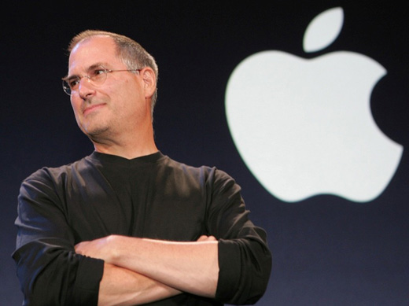
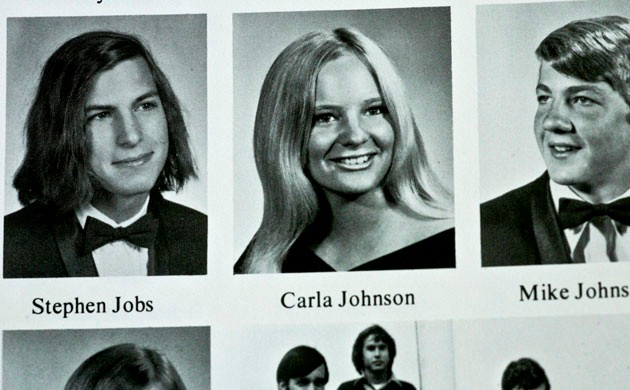

Cuốn Sách Này Ra Đời Như Thế Nào

ầu mùa hè năm 2004, tôi nhận được một cuộc gọi từ Steve Jobs. Jobs chỉ liên lạc với tôi khi có việc cần trong nhiều năm qua, và có lúc tôi bị ông khủng bố điện thoại, đặc biệt là khi chuẩn bị ra mắt một sản phẩm mới và muốn nó nằm ngay trên trang bìa của tạp chí Time hoặc trình chiếu trên CNN, nơi tôi làm việc. Nhưng giờ tôi không chẳng còn làm ở cả hai nơi đó nữa và cũng không nghe tin về ông nhiều. Chúng tôi đã trao đổi qua về học viện Aspen, nơi tôi mới vào làm lúc đó, và tôi đã mời ông đến phát biểu tại trại hè của chúng tôi ở Colorado, ông vui vẻ nhận lời đến tham dự nhưng sẽ không lên phát biểu, thay vào đó chúng tôi sẽ nói chuyện trong khi đi dạo.
Điều đó dường như khá vặt vãnh. Tôi đã không hề biết rằng đi dạo là sở thích của Jobs khi muốn nói chuyện một cách nghiêm túc. Hóa ra ông muốn tôi viết một cuốn tiểu sử về mình. Trước đó tôi đã xuất bản cuốn tự truyện về Benjamin Franklin và đang viết một cuốn nữa về Albert Einstein, sau khi nghe lời đề nghị của Jobs, thoạt đầu tôi khá ngạc nhiên, tôi nửa đùa nửa thật hỏi liệu có phải Jobs tự thấy mình là sự kế thừa tự nhiên một cách có thứ tự. Vì nghĩ rằng ông vẫn đang quá bận rộn với sự nghiệp, cũng như còn nhiều khó khăn phải đối mặt nên tôi đã từ chối. "Không phải lúc này", tôi nói. “Có thể là một hoặc hai chục năm nữa, khi ông về hưu”.
Tôi quen ông từ năm 1984, khi ông đến Manhattan để ăn trưa cùng với những biên tập viên của tạp chí Time và nhân tiện giới thiệu luôn chiếc máy Macintosh (Mac) mới của mình. Thậm chí lúc đó ông đã nổi nóng, và tấn công một phóng viên của tạp chí Time vì đã làm ông tổn thương bằng một câu chuyện quá lố. Nhưng sau này khi có cơ hội nói chuyện với Jobs, tôi thấy mình bị cuốn hút, giống như bao người khác trong nhiều năm qua, bởi sự hấp dẫn tuyệt vời toát lên từ con người ông. Chúng tôi giữ liên lạc, kể cả khi ông không còn làm ở Apple nữa. Khi có một cái gì đó muốn khoe, ví dụ như một chiếc máy tính của NeXT hay một bộ phim của Pixar, ông đều chia sẻ với tôi những điều tuyệt vời đó. Ông mời tôi đến một nhà hàng sushi ở Hạ Manhattan và nói với tôi rằng bất cứ những gì ông đang đưa ra thị trường đều là những thứ tốt nhất mà ông đã tạo ra. Tôi thích ông ở điểm này.
Khi Jobs trở lại cương vị điều hành ở Apple, chúng tôi đã đưa ông lên trang bìa của tạp chí Time, ngay sau đó, ông bắt đầu đưa ra những ý tưởng của mình về một loạt những người có ảnh hưởng nhất thế kỷ mà chúng tôi đang thực hiện. Jobs đã tiến hành chiến dịch “Think Different‟ (Nghĩ khác), đồng thời đưa ra những bức ảnh tiêu biểu của một số nhân vật mà chúng tôi đang cân nhắc, ông nhận thấy những nỗ lực trong việc đánh giá tầm ảnh hưởng mang tính lịch sử là một điều vô cùng lôi cuốn và hấp dẫn.
Kể từ sau khi lảng tránh lời đề nghị viết một cuốn tiểu sử về ông, tôi liên tục nhận được tin từ ông. Có lần tôi viết thư điện tử để xác minh điều mà con gái tôi nói, con bé nói logo của Apple là để tưởng nhớ đến Alan Turing, người tiên phong trong công nghệ máy tính của Anh, người đã giải mã các ký tự dùng trong thời kỳ nội chiến của Đức và tự tử bằng cách cắn một quả táo có tẩm xyanua. ông trả lời rằng ông cũng mong là mình nghĩ được điều đó nhưng không phải. Câu chuyện đó đã khởi đầu cho một cuộc trao đổi về lịch sử thời kỳ đầu của Apple, dần dần tôi thấy mình hứng thú với việc thu thập thông tin về đề tài này, đó cũng là lúc tôi quyết định viết một cuốn sách dựa trên ý tưởng như vậy. Khi cuốn tiểu sử về Albert Einstein của tôi ra đời, ông đã đến buổi ra mắt cuốn sách ở Pato Alto và kéo tôi ra một chỗ để đề nghị, một lần nữa khẳng định rằng ông sẽ là một chủ đề đáng giá.
Sự kiên trì của Jobs khiến tôi bối rối. Tôi biết ông là người khá kín tiếng về các vấn đề riêng tư và tôi cũng không có lý do gì để tin rằng ông ấy đã từng đọc bất kỳ một cuốn sách nào của tôi.
“Có thể một ngày nào đó,” tôi nói thêm. Tuy nhiên, năm 2009, Laurene Powell, vợ của Jobs đã thẳng thắn nói với tôi: “Nếu ông định viết một cuốn sách về Steve, ông nên làm ngay bây giờ đi”, ông vừa trải qua lần xạ trị thứ hai. Tôi đã thú nhận với bà rằng lần đầu tiên khi Jobs nói với tôi, tôi không hề biết ông bị bệnh. “Hầu như chưa ai biết điều này”, bà ấy nói. “ông ấy chỉ cho tôi biết tin đó trước khi chuẩn bị lên bàn phẫu thuật ung thư, và cho đến giờ ông ấy vẫn giữ bí mật,” bà giải thích.
Ngay sau đó tôi đã quyết định viết cuốn sách này. Jobs làm tôi ngạc nhiên bằng cách sẵn sàng chấp nhận không kiểm soát quá trình viết và thậm chí không đọc trước khi sách xuất bản. “Nó là cuốn sách của anh”,
Jobs nói, “Tôi sẽ không đọc nó đâu”. Nhưng sau lần ngã bệnh thứ hai, ông dường như có suy nghĩ sẽ hợp tác viết cuốn sách, điều này tôi đã không được biết, vì lúc đó căn bệnh ung thư của ông đã bắt đầu di căn. Jobs không bắt máy của tôi và tạm thời tôi gác dự án đó qua một bên.
Sau đó, đột nhiên ông gọi cho tôi vào đêm khuya gần giáp giao thừa năm 2009. Ông đang ở nhà tại Palo Alto cùng với em gái mình, nhà văn Mona Simpson. Vợ và ba con của ông đã có một chuyến đi trượt tuyết ngắn ngày, nhưng Jobs không thể đi cùng vì sức khỏe không cho phép. Tuy nhiên, tâm trạng của ông lại rất tệ, và chúng tôi đã nói chuyện hơn một giờ đồng hồ. ông bắt đầu bằng việc nhớ lại chuyện ông đã muốn xây dựng một bộ đếm tần số sử dụng năm 12 tuổi, lúc đó ông đã tìm được số điện thoại của Bill Hewlett, người sáng lập HP trong cuốn danh bạ điện thoại và đã gọi cho Bill để trao đổi. Jobs nói rằng, 12 năm qua kể từ khi ông trở lại Apple, là quãng thời gian làm việc hiệu quả nhất của ông trong việc sáng tạo ra các dòng sản phẩm mới. Nhưng mục tiêu quan trọng hơn, ông tiếp tục, đó là thực hiện được điều mà Hewlett và cộng sự của ông ta David Packard đã làm được - tạo ra một công ty đầy ắp sự sáng tạo mang tính đột phá đến mức nó tồn tại lâu hơn bản thân người sáng lập ra nó.
“Tôi luôn nghĩ tính tình mình lúc nào cũng như một đứa trẻ, nhưng tôi yêu công nghệ điện tử”, Jobs nói. “Tôi đã học được bài học từ một trong những thần tượng của tôi, Edwin Land của Polaroid, ông ấy nói về tầm quan trọng của những con người đang ở vị trí giao thoa giữa tính nhân văn và khoa học, và tôi đã quyết định đó là những gì mà mình cần phải theo đuổi". Jobs nói cứ như thể ông đang gợi ý một chủ đề cho cuốn sách về tiểu sử của mình vậy (ít nhất trong trường hợp này, chủ đề đó hóa ra lại rất có giá trị). Sự sáng tạo tồn tại khi nhận thức về tính nhân văn và khoa học kết tinh trong một cá tính mạnh mẽ là chủ đề tôi quan tâm nhất trong các cuốn tiểu sử về Benjamin Franklin và Albert Einstein, và tôi tin đó là chìa khóa để mở cửa những nền kinh tế mang tính đột phá trong thế kỷ XXI.
Tôi hỏi Jobs tại sao ông lại muốn tôi là người viết tiểu sử của ông.“Tôi nghĩ anh biết cách làm cho người khác muốn mở lời,” Jobs trả lời. Đó là một câu trả lời nằm ngoài sức tưởng tượng của tôi. Tôi biết mình sẽ phải phỏng vấn rất nhiều người đã từng bị ông sa thải, lợi dụng, bỏ rơi, hoặc bị làm cho tức điên lên, và tôi sợ rằng ông sẽ chẳng thoải mái gì với những điều mà họ chia sẻ với tôi. Và quả thực Jobs đã nổi điên khi nghe được những phản hòi từ những người tôi đã phỏng vấn. Nhưng sau đó hai tháng, ông lại bắt đầu khuyến khích mọi người nói chuyện với tôi, kể cả những đối thủ và người bạn gái cũ. ông cũng không cấm cản bất cứ điều gì. “Tôi đã làm quá nhiều thứ không đáng tự hào, như là việc đã làm cho bạn gái mang thai khi tôi 23 tuổi và cái cách mà tôi giải quyết vấn đề đó.” ông nói. “Nhưng tôi không có gì đáng xấu hổ để phải giấu giếm cả”. Ông đã không kiểm soát bất cứ điều gì tôi viết ra, hoặc thậm chí không đòi hỏi được đọc trước bản thảo, ông chỉ quan tâm khi nhà xuất bản muốn làm bìa cho cuốn sách. Khi Jobs nhìn thấy bức hình bìa đầu tiên đã được chỉnh sửa, ông ấy không thích lắm và yêu cầu thiết kế lại. Tôi thấy buồn cười nhưng cũng thoải mái, vì vậy tôi sẵn sàng chấp thuận.
Tôi kết thúc hơn bốn mươi cuộc phỏng vấn và nói chuyện với Jobs. Một vài trong số đó là các cuộc gặp chính thức trong phòng khách nhà ông ở Palo Alto, một số khác được thực hiện trong những buổi đi dạo, trong khi lái xe hoặc qua điện thoại. Trong hai năm tiếp xúc qua các cuộc gặp gỡ, Jobs trở nên thân mật và chia sẻ nhiều hơn, mặc dù có những lần tôi chứng kiến điều mà các cựu đồng nghiệp của ông ở Apple gọi là “triết lý bóp méo thực tế” của ông. Đôi khi là những phần ký ức vô tình bị khuyết mà ai cũng có thể mắc phải. Có lúc, ông ấy trở lại là chính mình ở thực tại.
Để kiểm chứng và chọn lọc những chuyện về ông, tôi đã phỏng vấn hơn một trăm người bạn, họ hàng, đối thủ cạnh tranh, kẻ thù và đồng nghiệp của Jobs.
Vợ của Jobs cũng không đòi hỏi bất cứ sự kiểm soát hay giới hạn thông tin nào, bà cũng không yêu cầu được xem trước bản thảo. Thực tế, bà còn ủng hộ tôi mô tả một cách chân thực về những hạn chế cũng như điểm mạnh của ông. Bà là một trong những người phụ nữ thông minh và chân thành nhất mà tôi từng gặp. “Có những phần cuộc đời và nhân cách của ông ấy cực kỳ rối rắm, đó là sự thật” bà nói với tôi ngay từ đầu. “Ông không cần thanh minh cho ông ấy. Jobs rất hay thay đổi, nhưng cuộc đời ông ấy là cả một câu chuyện đáng nhớ, và tôi muốn thấy nó được mô tả một cách chân thực”.
Tôi dành cho bạn đọc việc đánh giá xem liệu tôi có thành công với nhiệm vụ này hay không. Tôi chắc rằng có những diễn viên trong vở kịch này sẽ thấy một số sự kiện khác với thực tế và nghĩ rằng tôi đã bị kẹt trong triết lý bóp méo sự thật của Jobs. Điều này từng xảy ra khi tôi viết cuốn sách về Henry Kissinger. Nhìn chung mà nói thì kế hoạch này được chuẩn bị khá kỹ, tôi nhận thấy mọi người đều có cảm xúc tích cực và tiêu cực về Jobs mà hiệu ứng Rashomon (cảm ứng) là một minh chứng điển hình. Tuy nhiên tôi đã cố gắng hết sức để cân bằng những tư liệu mang tính xung đột và minh bạch với những nguồn tư liệu tôi đã sử dụng.
Đây là cuốn sách viết về một cuộc đời đầy rẫy những thăng trầm, về cá tính lập dị độc đáo của một doanh nhân có đầu óc sáng tạo với khát khao vươn tới sự hoàn mỹ, về cuộc cách mạng hóa dữ dội sáu ngành công nghiệp: máy tính cá nhân, điện ảnh hoạt họa, âm nhạc, điện thoại, máy tính bảng và xuất bản điện tử. Bạn đọc có thể sẽ thêm vào một ngành công nghiệp thứ bảy, đó là hệ thống các cửa hàng bán lẻ mà Jobs không thay đổi nhiều nhưng cũng đáng để nói đến. Ngoài ra, ông đã mở ra một con đường dẫn đến một thị trường mới cho các nội dung số dựa vào các ứng dụng hơn là chỉ dựa vào các website. Cùng lúc đó, Jobs không chỉ sản xuất những sản phẩm mang tính đổi mới mà khi Jobs quay trở lại, một công ty đang vận hành thuận lợi với DNA của Jobs, đang dần được hoàn thiện với những nhà thiết kế sáng tạo và các kỹ sư siêu việt, những người có thể tiếp tục hoàn thiện sứ mệnh của ông. Tháng 8 năm 2011, thời điểm khi ông từ chức CEO, doanh nghiệp mà ông đã thành lập trong ga-ra ô tô của cha mình đã trở thành tập đoàn có giá trị nhất thế giới.
Tôi hy vọng đây là một cuốn sách về sự đổi mới. Vào thời điểm khi nước Mỹ đang tìm cách để duy trì lợi thế cạnh tranh sáng tạo của mình, và khi thế giới đang cố gắng xây dựng nền kinh tế sáng tạo của kỷ nguyên số, Jobs nổi lên như một biểu tượng tối cao của sức sáng tạo, trí tưởng tượng, và sự đổi mới trường tòn. ông hiểu rằng cách tốt nhất để tạo ra giá trị đích thực trong thế kỷ XXI này là việc kết nối óc sáng tạo với khoa học công nghệ, vì thế ông đã xây dựng một công ty nơi mà trí tưởng tượng đột phá được kết hợp với những thành tựu đáng kinh ngạc của kỹ thuật.
Jobs và đồng nghiệp ở Apple có khả năng nghĩ khác đi: Họ phát triển không đơn thuần là những dòng sản phẩm tân tiến nhất dựa trên một số nhóm đối tượng nhỏ mà là toàn bộ các thiết bị và dịch vụ mới mà chính người tiêu dùng thậm chí vẫn chưa biết là mình cần.
Steve không phải là ông chủ hay là một con người kiểu mẫu, gói ghém gọn gàng vì mục đích thi đua. Với tính gàn dở, Jobs có thể dồn ép khiến những người xung quanh nổi điên và tuyệt vọng. Nhưng cá tính và các sản phẩm của ông đều có liên quan chặt chẽ với nhau, đó cũng là xu hướng mà phần mềm và phần cứng của Apple hướng đến, như là bộ phận của một thể thống nhất.
Câu chuyện của ông là những bài học để truyền tải kiến thức và những lời răn dạy về những thay đổi, vai trò, đường lối lãnh đạo, và các giá trị.
Vở kịch Henry V của Shakespeare, câu chuyện về một vị hoàng tử trẻ tuổi tốt bụng, người sẽ trở thành một vị vua tham vọng nhưng nhạy cảm, nhẫn tâm nhưng giàu tình cảm, nhiều cảm hứng nhưng bồng bột - bắt đầu bằng câu “O for a Muse of fire, that would ascend / The brightest heaven of invention.” (ôi nàng thơ của ta, chính nàng sẽ đốt lên cả một bầu trời sáng tạo). Nhưng với Steve Jobs, đỉnh cao của sự sáng tạo bắt đầu bằng câu chuyện về cha mẹ đẻ và cha mẹ nuôi của ông, và lớn lên trên một thung lũng nơi ông học được cách biến Silicon thành vàng.

STEVE JOBS
Ngôi nhà ở Los Altos với gara để xe - nơi Apple được thành lập

Hình ảnh Jobs trong cuốn Kỷ yếu của trường trung học Homestead, năm 1972
Một trong những trò nghịch ngợm của Jobs ở trường với cái tên là "SWAB JOBS"